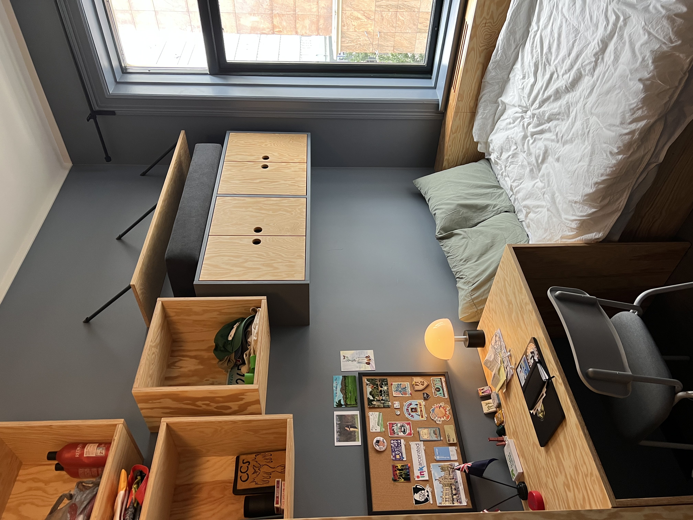

It’s a little past noon, and I’m sitting on the second floor of the Oslo public library. The crowd is mixed - students like myself
clustered around desks and outlets, kids from school groups in yellow crossing guard vests running outside of the watch of their teachers,
and tourists wandering in from the nearby museums to snap a couple pictures before braving the rain once again. It’s an impressive
building, even in a city that noticeably dedicates itself to public spaces. Sitting on the harbor, it’s an Oslo landmark along with
the nearby opera house (operahuset). But regardless of the place, it’s here that I've come to say I'm nearly a week into my stay in
Norway.
The first few days have been a blur, a mix of ikea stops, tourist sights, and return trips to ikea after realizing that I still don’t actually
have bedsheets. This too has been while not knowing much of the language at all - something that's made little things like getting
groceries more difficult so far. The time I've spent looking blankly at different brands of greek yogurt is absurd. Fortunately, most
people speak good English - particularly close to the city center, which has made asking for help relatively easy. Even still, I'm trying
to pick up as much Norwegian as I can, though right now that's mostly limited to hei's (means hi, pronounced the same way) and unnskyld
med's (means excuse me, pronounced oon-shill may). It's a work in progress - though I've been assured that Norwegians sometimes can't even
understand other Norwegians because some regional dialects are so strong.
Yesterday was my first day at KRUS, the University College of the Norwegian Correctional Service, where I’ll be spending my year
researching Electronic Monitoring - essentially house arrest - in Norway. Already, the Norwegian approach to corrections is much different
than anything I’ve worked with before. Here, the training to become a correctional officer is a two-year program (and may become a three-
year bachelor's degree soon), where in addition to practical training students get classes in social work, sociology, philosophy, and
criminology. While security is still a primary focus in prison, there's also a much greater emphasis on job training, education, and
living in a way that prepares people for life after their release. For one, Norwegian prisoners have a shared kitchen and make their own food, with
access to kitchen tools up to and including knives.
On one last note, my room is finally starting to look like a place where someone lives! Last night I set up my cork board, something for me
that always makes a place a home. It was the first thing I set up in my Barrett dorm, and the last thing I took down moving out from my
apartment a couple weeks ago. I’m hoping to add a couple more stickers and postcards as I travel around here, but for now it’s nice to
have some reminders of home :)

More of these to come soon hopefully! Ha det bra